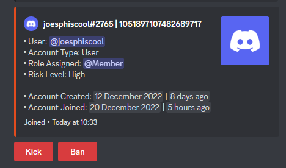

Hi this is the our bot we created! My friend and I are the creators.
I am Henry, and my friend is Alex.
I will show you each command and how they work.
Below is an image of all the commands as of December 2022:
All explanations to the commands below and images of what each command
does:
⚫ The "/emit" command is used to show information about a
player. This is what it would look like in the image below:

You can use the command "/emit player" only if you are an admin.
This command is used to check if the player is a risk and,
inaddition you can ban or kick the player if they are a risk.
⚫ The "/ping" is a very simple command which replys with pong
Anybody can you this command.
⚫ The "/reload commands" is the same as "/reload events"
and only the developers can use this command.
⚫ The "/setup_memberlog" is a command only avaibale to
admins on your server. This command is used to set a
Default member and bot role whenever a member or a bot
joins your server. This is a command to set up the "/emit
player" command.
⚫ The "/test" command is a command anybody can use. We decided to
leave it as a function because we thought it was funny.
⚫ The "/timeout" command is used to mute a player for a
certant amount of time. This is a moderation command
that can only be used by admins.
Frequently asked questions:
How do you add this bot to my server?
To add this bot to your server. You can click
here
How do I contact you? I need help.
You can join our discord server you can click
hereOr you can click on the "Talk To Us" page or just click
here to go there.